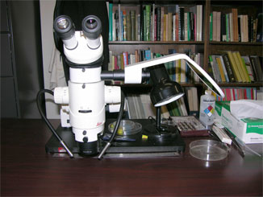
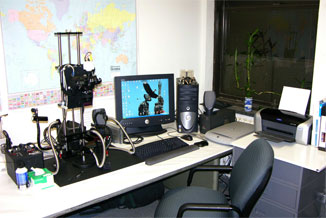

Natural Sciences Building Optical Equipment
The Arachnology Lab in the Division of Invertebrate Zoology, AMNH, is equipped with one Leica MZ16 and five Nikon SMZ1500 dissection microscopes with drawing attachments. Another Nikon stereomicroscope is available in the Natural Sciences Building for use by visitors to the Arachnid and Myriapod Collections. |
 |
|  | A Microptics™ ML1000 system, in the Arachnology Lab, allows digital photomicrography of dry and wet (ethanol submerged) as well as large to small specimens under visible and long-wave ultraviolet light (the latter exploiting the fluorescence property of the scorpion epicuticle). |
 |
 |
Molecular Systematics Laboratory
The Molecular Systematics Laboratory contains equipment for high throughput Sanger DNA sequencing, including an Applied Biosystems Inc. Prism™ 3730xl automated DNA sequencer, a Biomek NX sequencing robot for automated PCR and sequence purification and several Eppendorf Mastercyclers. Facilities for next generation sequencing are available in the Sackler Institute for Comparative Genomics and our partner institution The New York Genome Center.